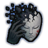

Manual Amnesia B/A/S
B/A/S-rank. The user forces themselves to forget. B: the three worst memories. A: every bad memory. S: every bad memory, and it ends a mental break.
| Rank | Chakra | Cooldown | Class level |
|---|---|---|---|
| B | 35 | 1000 s | 9 |
| A | 55 | 1000 s | 13 |
| S | 90 | 1000 s | 18 |